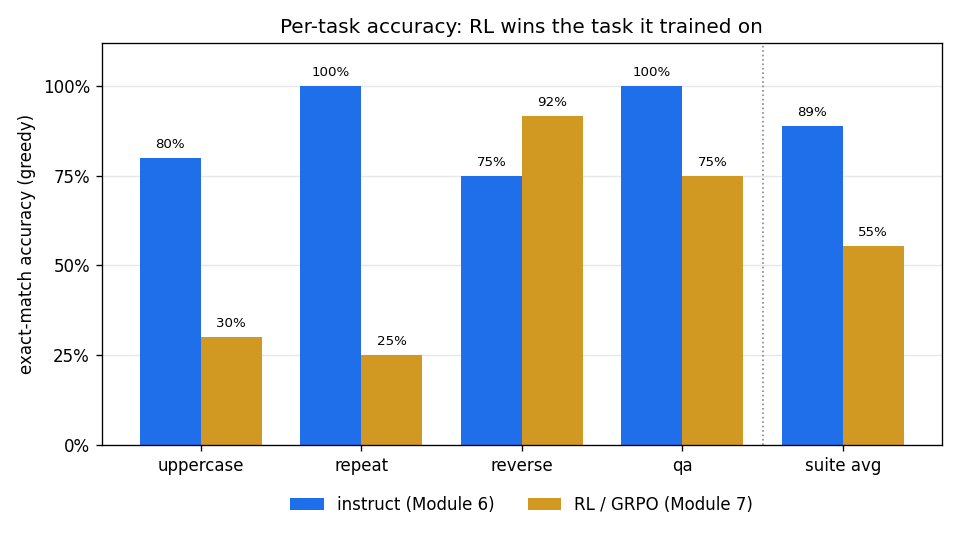

<!-- .slide: id="title" class="section-divider" data-state="is-section-divider" --> # LLMs 0 to 100 Module 9: Evaluation and Benchmarking --- <!-- .slide: id="review-numbers" --> ## Review: Every Module So Far Ended With a Number Each stage introduced its own metric. This module collects them and adds the standard benchmarks. <div class="card-grid cols-4"> <div class="card"><h4>Module 5 · Pretraining</h4><p>Held-out <strong>loss</strong> and <strong>perplexity</strong>. No labels needed, just text the model never saw.</p></div> <div class="card"><h4>Module 6 · SFT</h4><p><strong>Task accuracy</strong> after finetuning: does the model answer the instruction at all?</p></div> <div class="card"><h4>Module 7 · RL</h4><p>A <strong>reward curve</strong> and before/after accuracy on the reverse task.</p></div> <div class="card"><h4>Module 8 · Multimodal</h4><p>Exact-match scoring gets <strong>brittle</strong> once the answer is about an image.</p></div> </div> **Each training stage produces a different kind of model, so each stage gets a different measurement.** <!-- .element: class="text-lg" style="margin-top: 12px;" --> --- <!-- .slide: id="review-question" --> ## Review: The Question This Module Answers You are handed a checkpoint. **Is it any good? How does the industry report that?** <div class="slide-columns" style="grid-template-columns: repeat(2, 1fr); gap: 34px;"> <div> **What carries over** - Train/test splits from Module 2: a score on training data measures memorization - Cross-entropy and perplexity from Module 5 - The chat template and answer format from Module 6 - Verifiable rewards from Module 7, reused here as **scoring** instead of training signal </div> <div> **What is new** - The standard **benchmarks**: MMLU, GSM8K, HumanEval, MMMU, SWE-bench - Scoring answers that have **no single right answer** - Why the same model gets **different scores** at different labs - What a benchmark number does **not** tell you </div> </div> --- <!-- .slide: id="divider-basics" class="section-divider" data-state="is-section-divider" --> # Evaluations, Benchmarks, Leaderboards Three words, three different things --- <!-- .slide: id="three-words" --> ## Three Words, Three Different Things <div class="card-grid cols-3"> <div class="card"><h4>Evaluation</h4><p>A <strong>dataset plus a scoring rule</strong>. Run the model on the cases, score the outputs, report a number.</p></div> <div class="card"><h4>Benchmark</h4><p>An evaluation that is <strong>published and reused</strong>, so different labs can compare models on the same cases under the same rules.</p></div> <div class="card"><h4>Leaderboard</h4><p>A <strong>public table</strong> of benchmark results. A summary of evaluations, not an evaluation itself.</p></div> </div> Every announced number is a benchmark result: somebody's dataset plus somebody's scoring rule. Both are choices. <!-- .element: class="text-lg" style="margin-top: 12px;" --> --- <!-- .slide: id="two-requirements" --> ## Two Things Every Evaluation Needs <div class="slide-columns" style="grid-template-columns: repeat(2, 1fr); gap: 34px;"> <div> **Held-out data** - Test cases in training data: the score measures **memorization**, not ability - Same idea as the Module 2 train/test split - The web-scale version is **contamination**, later in this module </div> <div> **An agreed scoring rule** - "Accuracy" means nothing until you define **answer extraction** and **what counts as a match** - Is "The answer is 4." the same as "4"? Somebody decides and publishes the code </div> </div> Same benchmark, same weights, different numbers: usually the scoring rule, not fraud. <!-- .element: class="text-lg" style="margin-top: 10px;" --> --- <!-- .slide: id="three-ways-to-score" --> ## Three Ways to Score an Output <div class="card-grid cols-3"> <div class="card"><h4>Automatic and exact</h4><p>Compare against a key, run code against tests, check a number.</p><p style="margin-top: 8px;"><strong>Cheap and objective.</strong> Only works when there is a right answer.</p></div> <div class="card"><h4>Human judgment</h4><p>People read the outputs and rate or rank them.</p><p style="margin-top: 8px;"><strong>Expensive and slow.</strong> Still the ground truth for open-ended work.</p></div> <div class="card"><h4>Model judgment</h4><p>A strong model grades the outputs against a rubric.</p><p style="margin-top: 8px;"><strong>Cheap and scalable.</strong> A proxy that has to be checked against humans.</p></div> </div> **Which one you can use depends on the model you are measuring.** That is the rest of the module. <!-- .element: class="text-lg" --> --- <!-- .slide: id="two-shapes" --> ## Two Scoring Shapes, and How to Tell Them Apart <div class="compare-table"> <table> <thead><tr><th>Shape</th><th>What happens</th><th>Works on</th><th>Examples</th></tr></thead> <tbody> <tr><td><strong>Multiple choice, scored by likelihood</strong></td><td>Paste each choice onto the question; read the probability the model assigns to it. <strong>Most probable choice wins.</strong> Nothing is generated: one forward pass per choice.</td><td>Any model, including a base model that cannot follow instructions</td><td>MMLU, HellaSwag, ARC, WinoGrande</td></tr> <tr><td><strong>Free generation, scored by a checker</strong></td><td>The model writes an answer; <strong>extract and check it</strong> against a key, a parser, or a test suite.</td><td>Instruction-tuned models that answer prompts</td><td>GSM8K, HumanEval, IFEval, most instruct benchmarks</td></tr> </tbody> </table> </div> The exercise implements both. They can disagree completely about the same two models. <!-- .element: class="text-lg" --> --- <!-- .slide: id="benchmark-history" --> ## Where This Whole Practice Came From **ImageNet (2009)** showed that a shared test set with a public leaderboard can organize a field. AlexNet (Module 1) was an ImageNet result. NLP copied the pattern: <div class="card-grid cols-3"> <div class="card"><h4>SQuAD (2016)</h4><p>100,000 reading-comprehension questions with a shared scoring script. Brought <strong>exact match and token F1</strong> into NLP.</p></div> <div class="card"><h4>GLUE (2018)</h4><p>Nine tasks bundled into <strong>one score</strong>. Human performance was passed in about a year.</p></div> <div class="card"><h4>SuperGLUE (2019)</h4><p>Built because GLUE saturated. Passed in about <strong>eighteen months</strong>.</p></div> </div> Every benchmark in this module descends from this: **a shared test set, a shared scoring rule, a public table.** <!-- .element: class="text-lg" --> --- <div class="figure-card">  <div class="figure-info"> ## Fei-Fei Li <!-- .element: class="fragment fade-in" --> <div class="fragment fade-in"> ### ImageNet and the ILSVRC competition (2009-2017) Built the dataset and annual competition that established the shared-benchmark-plus-leaderboard model. ImageNet was not an algorithm; it was a **measurement instrument**. Without the benchmark there is no scoreboard, and the 2012 AlexNet jump is just one lab's claim. </div> </div> </div> --- <div class="figure-card">  <div class="figure-info"> ## Samuel Bowman & Pranav Rajpurkar <!-- .element: class="fragment fade-in" --> <div class="fragment fade-in"> ### GLUE and SuperGLUE (2018, 2019); SQuAD (2016) Bowman, with **Alex Wang** and collaborators, bundled nine tasks into **one headline number** behind a public leaderboard with a held-out test server, so nobody could tune on the answers. Later suites copy that template. Rajpurkar and collaborators published SQuAD. Its **official scoring script** (normalize, then exact match and token F1) became the default grader for short free-form answers. You write that script in the exercise. </div> </div> </div> --- <!-- .slide: id="divider-base" class="section-divider" data-state="is-section-divider" --> # Evaluating a Pretrained Model What can you measure when the model will not answer you? --- <!-- .slide: id="base-problem" --> ## A Base Model Does Not Follow Instructions Ask a base model "what is the capital of France?" and it may continue with more questions (why Module 6 exists). Most abilities **cannot be asked for directly**. Two things can be measured anyway: <div class="card-grid cols-2"> <div class="card"><h4>How well it predicts text</h4><p>Loss and perplexity on held-out text. <strong>No labels, no instructions, no generation.</strong></p></div> <div class="card"><h4>What it knows</h4><p>Multiple-choice benchmarks scored by <strong>likelihood</strong>, which never require the model to write anything.</p></div> </div> --- <!-- .slide: id="base-perplexity" --> ## Perplexity: Module 5's Metric, Restated $$\mathcal{L} = -\frac{1}{T}\sum_{t=1}^{T}\log p_\theta(x_t \mid x_{<t}), \qquad \mathrm{PPL} = \exp(\mathcal{L})$$ <div class="metric-box"> <p>Perplexity is the model's average <strong>branching factor</strong>: how many equally likely tokens it chooses among at each position. 1 = never surprised. 50,000 = guessing uniformly over the vocabulary.</p> </div> Lower is better. It needs no labels, only held-out text, so it works on any checkpoint at any point in training. <!-- .element: class="text-lg" --> --- <!-- .slide: id="base-bpb" --> ## Perplexity Does Not Compare Across Tokenizers Perplexity is **per token**. A bigger vocabulary chops the same text into fewer, larger pieces (Module 4), so two **equally good** models can report very different perplexities. Both models below spend 300 nats on the same 1,000-byte passage, so they model it equally well: <div class="compare-table"> <table> <thead><tr><th>Model</th><th>Vocabulary</th><th>Tokens used</th><th>Total loss</th><th>Perplexity</th><th>BPB</th></tr></thead> <tbody> <tr><td><strong>X</strong></td><td class="num">32,000</td><td class="num">250</td><td class="num">300 nats</td><td class="num">3.32</td><td class="num">0.433</td></tr> <tr><td><strong>Y</strong></td><td class="num">128,000</td><td class="num">200</td><td class="num">300 nats</td><td class="num">4.48</td><td class="num">0.433</td></tr> </tbody> </table> </div> Model Y looks **35% worse** and is not worse at all. It answered fewer, harder questions. <!-- .element: class="text-lg" --> --- <!-- .slide: id="base-bpb-units" --> ## Bits per Byte: What the Two Units Are Doing $$\mathrm{BPB} = \frac{\mathcal{L}_{\text{total}}}{\ln(2) \cdot \text{number of bytes}}$$ <div class="slide-columns" style="grid-template-columns: repeat(2, 1fr); gap: 34px;"> <div> **Bytes: how much text there is** - UTF-8 size of the held-out passage - A property of the *file* - Does not move when you swap tokenizers </div> <div> **Bits: what the model spent** - Total surprisal, converted from nats ($\div \ln 2$) - Moves with the weights - Barely moves with the tokenizer </div> </div> Like **dollars per mile**: a cost, divided by a fixed distance to cover. <!-- .element: class="text-lg" --> --- <!-- .slide: id="base-bpb-compression" --> ## Which Makes It a Compression Rate A byte holds **8 bits**. Bits per byte = how many bits the model needs to store one byte of English. 8 means no prediction at all. <div class="card-grid cols-4"> <div class="card"><h4>8.0</h4><p>No model. Every byte equally likely; store the file as it came.</p></div> <div class="card"><h4>~4.1</h4><p>A character histogram. Knows "e" is common and most byte values never appear.</p></div> <div class="card"><h4>~1.0</h4><p>Shannon's 1951 estimate for English, measured by having people guess the next letter.</p></div> <div class="card"><h4>~0.7</h4><p>A competent modern LLM on general text. Better than Shannon's humans.</p></div> </div> Multiply by the byte count: the compressed file size. Module 1 claimed **prediction and compression are the same operation**. This is that claim as a number. <!-- .element: class="text-lg" --> --- <!-- .slide: id="base-bpb-rule" --> ## When Each One Is Allowed <div class="card-grid cols-2"> <div class="card"><h4>Perplexity is fine</h4><p>Same model family, same tokenizer, different checkpoints. Watching your own loss curve. This covers most of the day-to-day cases.</p></div> <div class="card warn"><h4>Perplexity is meaningless</h4><p>Two labs' models with different tokenizers. Report bits per byte, or report nothing.</p></div> </div> --- <!-- .slide: id="base-perplexity-limits" --> ## Low Perplexity Is Not Usefulness Perplexity rewards **fluent continuation**, not correct answers. Two models with nearly identical perplexity can differ by tens of points on tasks. The exercise measures this directly: the RL model has **lower** perplexity than the instruct model, and is **far worse** at three of the four tasks. This is why nobody ships a model on a perplexity number. <!-- .element: class="text-lg" style="margin-top: 10px;" --> --- <!-- .slide: id="base-benchmarks" --> ## Knowledge Benchmarks for Base Models All scored by **likelihood**, so they work without instruction-following. <div class="bench-table dense"> <table> <thead><tr><th>Benchmark</th><th>Year</th><th>What it asks</th></tr></thead> <tbody> <tr><td><strong>MMLU</strong></td><td>2020</td><td>57 subjects of multiple choice, elementary to professional. For years, <em>the</em> headline number for a base model.</td></tr> <tr><td><strong>HellaSwag</strong></td><td>2019</td><td>Which sentence plausibly continues this situation? Commonsense, adversarially filtered.</td></tr> <tr><td><strong>ARC</strong></td><td>2018</td><td>Grade-school science questions, split into Easy and Challenge sets.</td></tr> <tr><td><strong>WinoGrande, PIQA</strong></td><td>2019</td><td>Pronoun resolution and physical commonsense. The standard set in open-model reports.</td></tr> <tr><td><strong>TriviaQA, Natural Questions</strong></td><td>2017, 2019</td><td>Factual recall with short free-form answers, scored by exact match and F1.</td></tr> <tr><td><strong>GPQA</strong></td><td>2023</td><td>Graduate-level science, written to be hard <em>even with web search</em>. Built after MMLU began saturating.</td></tr> </tbody> </table> </div> --- <!-- .slide: id="base-fewshot" --> ## Few-Shot Prompting Is Part of the Protocol Base models get `k` solved examples in the context, so the format comes from the prompt itself. This is GPT-3's in-context learning (Module 5). <div class="card-grid cols-3"> <div class="card"><h4>0-shot</h4><p>Question only. Hardest for a base model: it may not produce an answer-shaped output at all.</p></div> <div class="card"><h4>5-shot</h4><p>The MMLU convention. Five worked examples, then the question.</p></div> <div class="card"><h4>25-shot</h4><p>Used for ARC on some leaderboards. Scores move with `k`.</p></div> </div> **A number without its shot count is not reproducible.** "MMLU 68" is incomplete. "MMLU 68, 5-shot, likelihood-scored" is checkable. <!-- .element: class="text-lg" --> --- <!-- .slide: id="base-daily-use" --> ## What Pretraining Evaluation Is Actually For Nobody ships a base model. Its evaluations drive **training decisions**: <div class="card-grid cols-3"> <div class="card"><h4>Checkpoint selection</h4><p>Compare checkpoints of the same run as training proceeds. Is it still improving?</p></div> <div class="card"><h4>Data mixtures</h4><p>Does more code, or more filtered web text, move the numbers? A/B the corpus.</p></div> <div class="card"><h4>Scaling checks</h4><p>Confirm a run is on the loss curve the scaling law predicted (Module 5).</p></div> </div> --- <div class="figure-card">  <div class="figure-info"> ## Dan Hendrycks <!-- .element: class="fragment fade-in" --> <div class="fragment fade-in"> ### MMLU (2020) and MATH (2021) Created the benchmarks that defined frontier comparison for years: **MMLU** for broad knowledge, **MATH** for competition mathematics. Both were built deliberately harder than models of the time could handle, which kept them useful longer. Both are now largely saturated, which happens to every benchmark, faster each time. </div> </div> </div> --- <!-- .slide: id="divider-instruct" class="section-divider" data-state="is-section-divider" --> # Evaluating an Instruction-Tuned Model Now we can ask it questions and grade what it writes --- <!-- .slide: id="instruct-two-families" --> ## After SFT, Two Kinds of Question <div class="slide-columns" style="grid-template-columns: repeat(2, 1fr); gap: 34px;"> <div> **Questions with a right answer** "What is 17 times 24?" "Write a function that returns the median." Scored **automatically**: compare to a key, parse a number, run the tests. Objective, cheap, reproducible. </div> <div> **Questions without one** "Summarize this report." "Explain recursion to a beginner." Scored by **comparison**: humans or a model judge decide which of two answers is better. Expensive, subjective, unavoidable. </div> </div> Most modern evaluation effort goes into moving questions from the right column to the left: making answers **checkable**. <!-- .element: class="text-lg" style="margin-top: 10px;" --> --- <!-- .slide: id="instruct-accuracy" --> ## The Simplest Metric, and Why It Breaks $$\mathrm{accuracy} = \frac{\text{number correct}}{\text{number evaluated}}$$ Exact match is the most transparent metric and the most brittle. Same answer, four strings: <div class="card-grid cols-4"> <div class="card"><h4>"4"</h4><p>The key</p></div> <div class="card"><h4>"4."</h4><p>Trailing punctuation</p></div> <div class="card"><h4>" 4 "</h4><p>Whitespace</p></div> <div class="card warn"><h4>"The answer is 4."</h4><p>Needs answer extraction</p></div> </div> Every benchmark ships two rules before it compares anything: <!-- .element: class="text-lg" --> - **Normalization**: lowercase, strip punctuation and articles, collapse whitespace - **Answer extraction**: text after `####`, the last number, the content of `\boxed{}` --- <!-- .slide: id="instruct-f1" --> ## Partial Credit: Token-Level F1 When the answer is a phrase, exact match throws away information. Precision, recall, and F1 give partial credit: $$\mathrm{precision} = \frac{TP}{TP+FP}, \qquad \mathrm{recall} = \frac{TP}{TP+FN}$$ $$F_1 = 2 \cdot \frac{\mathrm{precision}\cdot\mathrm{recall}}{\mathrm{precision}+\mathrm{recall}}$$ <div class="metric-box"> <p>Predicted <strong>"it is bluu"</strong> against reference <strong>"it is blue"</strong>: two of three predicted tokens are shared, two of three reference tokens are recovered. Exact match scores <strong>0.0</strong>. F1 scores <strong>0.67</strong>.</p> </div> These come from information retrieval, via SQuAD's scoring script. The exercise implements this exact computation. <!-- .element: class="text-lg" --> --- <div class="figure-card">  <div class="figure-info"> ## Karen Spärck Jones <!-- .element: class="fragment fade-in" --> <div class="fragment fade-in"> ### Information retrieval; inverse document frequency (1972) A founder of information retrieval, whose field gave NLP the vocabulary of **precision and recall**. Every F1 score in every model card traces back to this work. Her often-quoted view that computing is too important to be left to men came with a matching insistence: measure systems **on real tasks**, not on their designers' intuitions. </div> </div> </div> --- <!-- .slide: id="instruct-checkable" --> ## Better Than String Comparison: Run the Answer If the answer can be **executed**, do not compare strings: <div class="card-grid cols-4"> <div class="card"><h4>Parse the number</h4><p>Extract the final numeric answer and compare it as a number, not text.</p></div> <div class="card"><h4>Validate the schema</h4><p>Does the JSON parse, and does it match the required fields and types?</p></div> <div class="card"><h4>Run the tests</h4><p>Execute the generated function against hidden unit tests.</p></div> <div class="card"><h4>Check the constraint</h4><p>Exactly three bullet points? No use of the letter "e"? A parser can tell.</p></div> </div> Module 7's **verifiable reward** (a deterministic function that decides correctness), reused here for **scoring** instead of training. <!-- .element: class="text-lg" --> --- <!-- .slide: id="instruct-benchmarks" --> ## The Standard Instruct Benchmarks <div class="bench-table"> <table> <thead><tr><th>Benchmark</th><th>Year</th><th>What it tests, and how it is checked</th></tr></thead> <tbody> <tr><td><strong>GSM8K</strong></td><td>2021</td><td>Grade-school math word problems. Single numeric answer after a <code>####</code> marker. The canonical checkable-answer benchmark.</td></tr> <tr><td><strong>MATH</strong></td><td>2021</td><td>Competition mathematics, much harder. Answers checked by <strong>symbolic equivalence</strong>, not string match.</td></tr> <tr><td><strong>HumanEval, MBPP</strong></td><td>2021</td><td>Write a Python function from a docstring. Scored by <strong>running hidden tests</strong>.</td></tr> <tr><td><strong>IFEval</strong></td><td>2023</td><td>Instructions with programmatically checkable constraints. Measures <strong>instruction-following itself</strong>, separately from knowledge.</td></tr> <tr><td><strong>BBH, MMLU-Pro</strong></td><td>2022, 2024</td><td>Harder successors, built once the originals stopped separating models.</td></tr> </tbody> </table> </div> --- <!-- .slide: id="instruct-passk" --> ## Sampling Changes What the Number Means **Greedy decoding** scores the single best answer. `pass@k` asks whether **any of k samples** is correct, the right metric when you can test candidates and keep the winner: $$\mathrm{pass@}k = 1 - \frac{\binom{n-c}{k}}{\binom{n}{k}} \quad \text{for } c \text{ correct out of } n \text{ samples}$$ <div class="card-grid cols-3"> <div class="card"><h4>pass@1</h4><p>Ordinary accuracy of one sample. What a user experiences.</p></div> <div class="card"><h4>pass@10</h4><p>Is the answer <strong>anywhere</strong> in the distribution across ten tries?</p></div> <div class="card"><h4>The gap</h4><p>Measures how <strong>sharp</strong> the distribution is, which is what reasoning-model evaluation turns on.</p></div> </div> Introduced with HumanEval: for code, you really can generate ten candidates and run the tests. <!-- .element: class="text-lg" --> --- <!-- .slide: id="judge-no-key" --> ## When There Is No Right Answer Summaries, explanations, advice, code review, tone: no key to compare against. The field has tried two answers. <div class="slide-columns" style="grid-template-columns: repeat(2, 1fr); gap: 34px;"> <div> **Old: overlap with a reference** - **BLEU** (2002, translation), **ROUGE** (2004, summarization) - Count n-grams shared with human-written references - Drove twenty years of measurable progress - Cannot tell whether an answer is **true or useful**: a fluent wrong answer scores well </div> <div> **Current: comparison** - Show two answers to the same prompt, ask **which is better** - No reference text, no vocabulary matching - Measures what users care about - Cost: you need a judge, and judges have biases </div> </div> --- <div class="figure-card">  <div class="figure-info"> ## Kishore Papineni & Chin-Yew Lin <!-- .element: class="fragment fade-in" --> <div class="fragment fade-in"> ### BLEU (IBM, 2002) and ROUGE (2004) Papineni and collaborators scored translations by **n-gram overlap with human references**. Before BLEU, comparing two translation systems meant hiring translators. After it, a research group could iterate overnight. Lin did the same for summarization. Both metrics correlate **weakly** with human judgment on modern systems and are still reported anyway: a flawed number everyone computes the same way is at least comparable. </div> </div> </div> --- <!-- .slide: id="judge-arena" --> ## Human Preference at Scale: Chatbot Arena Anonymous side-by-side votes from **real users on real prompts**, aggregated into an Elo-style rating. The industry's de facto public scoreboard. <div class="card-grid cols-2"> <div class="card"><h4>Why it worked</h4><p>Measures what people <strong>actually prefer</strong>, on prompts people actually send, not an academic test set.</p></div> <div class="card warn"><h4>The caveat</h4><p><strong>Preference is not correctness.</strong> Longer, better-formatted, more agreeable answers win votes: Module 7's length and sycophancy bias, now measured instead of trained.</p></div> </div> A model can climb the Arena by getting friendlier and more verbose, not more accurate. <!-- .element: class="text-lg" --> --- <div class="figure-card">  <div class="figure-info"> ## Wei-Lin Chiang & Lianmin Zheng <!-- .element: class="fragment fade-in" --> <div class="fragment fade-in"> ### Chatbot Arena and MT-Bench (UC Berkeley and LMSYS, 2023) With **Ying Sheng** and collaborators, they turned **anonymous preference votes** into a continuously updated public ranking, and published the paired-comparison data. Their **MT-Bench** paper is the standard reference for LLM-as-a-judge: a strong model's verdicts agree with humans enough to be useful, and are biased enough to need controls. Both rest on one shift: with no answer key, you can still ask **which of two answers is better.** </div> </div> </div> --- <!-- .slide: id="judge-llm" --> ## LLM-as-a-Judge A strong model grades answers against a rubric, or picks a winner between two. Correlates well with human preference, costs almost nothing, now everywhere. <div class="card-grid cols-2"> <div class="card"><h4>MT-Bench (2023)</h4><p>Eighty multi-turn questions, scored 1–10 by a strong judge model against a rubric.</p></div> <div class="card"><h4>AlpacaEval (2023)</h4><p>Head-to-head win rate against a fixed reference model, judged automatically. Version 2 <strong>controls for length</strong> explicitly.</p></div> </div> A judge is a **proxy**. Validate it against a few hundred human-labeled examples **from your own task** before trusting its numbers. <!-- .element: class="text-lg" --> --- <!-- .slide: id="judge-biases" --> ## Judge Biases You Should Assume Are Present <div class="card-grid cols-4"> <div class="card warn"><h4>Position bias</h4><p>Prefers whichever answer came first. <strong>Fix:</strong> run both orders and average.</p></div> <div class="card warn"><h4>Verbosity bias</h4><p>Prefers longer answers. <strong>Fix:</strong> control for length, or report length alongside the win rate.</p></div> <div class="card warn"><h4>Self-preference</h4><p>Favors outputs that look like its own. <strong>Fix:</strong> use a judge from a different family.</p></div> <div class="card warn"><h4>Competence ceiling</h4><p>A judge cannot reliably grade work it could not do itself. <strong>Fix:</strong> no fix. Use humans.</p></div> </div> --- <!-- .slide: id="sq-swap-answers" --> ## Side Quest: Swap the Answers Ask a judge model which of two answers is better. Record the verdict. Present **the same answers in the opposite order** and ask again. <div class="card-grid cols-2"> <div class="card"><h4>What often happens</h4><p>The verdict flips. The judge preferred <strong>the first position</strong>, not the better answer.</p></div> <div class="card"><h4>What it costs to fix</h4><p>Double the judge calls. Every serious LLM-judge harness randomizes or averages over order for exactly this reason.</p></div> </div> A two-minute experiment that changes how you read every LLM-judged leaderboard. The extra credit builds a rule-based version you can watch flip. <!-- .element: class="text-lg" --> --- <!-- .slide: id="divider-reasoning" class="section-divider" data-state="is-section-divider" --> # Evaluating a Reasoning or RL-Trained Model The reward went up. So what? --- <!-- .slide: id="reasoning-reward-curve" --> ## A Reward Curve Is Not an Evaluation Module 7's climbing reward curve says **the optimizer works**. The reward is exactly what was optimized, so the curve says nothing about whether the model got better. <div class="card-grid cols-2"> <div class="card"><h4>What the reward curve measures</h4><p>Training progress on the training prompts, under the training reward. A <strong>diagnostic</strong>.</p></div> <div class="card warn"><h4>What it cannot measure</h4><p>Whether the ability generalizes, whether other abilities survived, or whether the model found a way to score without solving anything.</p></div> </div> Evaluate an RL model with the **same held-out benchmarks as before**, plus new ones for RL's failure modes. <!-- .element: class="text-lg" --> --- <!-- .slide: id="reasoning-benchmarks" --> ## Hard Problems With Checkable Answers This is the RLVR setup from Module 7 used as a **test set** rather than a training signal. <div class="bench-table"> <table> <thead><tr><th>Benchmark</th><th>What it asks</th></tr></thead> <tbody> <tr><td><strong>AIME</strong> and competition math</td><td>Short integer answers, hard enough to be unsaturated. The standard headline number in reasoning-model announcements.</td></tr> <tr><td><strong>GPQA Diamond</strong></td><td>The hardest slice of GPQA: graduate science questions that resist web search.</td></tr> <tr><td><strong>Competitive programming</strong></td><td>Codeforces-style problems, scored by running the judge's tests. Often reported as an Elo rating.</td></tr> <tr><td><strong>SWE-bench</strong></td><td>Resolve a real GitHub issue so the project's test suite passes. Covered under agent evaluation.</td></tr> <tr><td><strong>ARC-AGI</strong></td><td>Abstract visual puzzles designed to resist memorization. The most-cited "is it really reasoning" benchmark.</td></tr> </tbody> </table> </div> --- <!-- .slide: id="reasoning-reporting" --> ## Two Reporting Rules That Matter More Here Reasoning models are **stochastic and expensive**. Without these two numbers, the score is meaningless: <div class="card-grid cols-2"> <div class="card"><h4>1. How the samples were combined</h4><p>Is this <strong>pass@1</strong>, <strong>majority vote</strong> over n samples (self-consistency), or <strong>best-of-n with a verifier</strong>?</p><p style="margin-top: 8px;">These can differ by tens of points on the same model and the same benchmark.</p></div> <div class="card"><h4>2. The reasoning budget</h4><p>Test-time compute is a dial (Module 7). The same model at 2,000 thinking tokens and at 32,000 is not the same system.</p><p style="margin-top: 8px;">A score without a token budget is <strong>not reproducible</strong>.</p></div> </div> --- <!-- .slide: id="reasoning-passk" --> ## The pass@k Lesson, Restated as an Evaluation Principle Module 7: RL **sharpens** the sampling distribution rather than expanding ability. As measurement, that is a claim about the pass@1 versus pass@k gap: <div class="card-grid cols-3"> <div class="card"><h4>pass@1 rises sharply</h4><p>The model now puts its probability mass on the answer it could already sometimes find.</p></div> <div class="card"><h4>pass@k at large k stays flat</h4><p>The set of problems it can solve <em>at all</em> did not grow.</p></div> <div class="card warn"><h4>The consequence</h4><p>Measuring only pass@1 <strong>systematically overstates</strong> what RL added.</p></div> </div> In the exercise: the RL model's QA pass@1 falls to 70% while pass@5 stays at 100%. The right answer is still in there, just no longer on top. <!-- .element: class="text-lg" --> --- <!-- .slide: id="reasoning-breakage" --> ## What RL Breaks That the Target Benchmark Will Not Show <div class="card-grid cols-2"> <div class="card warn"><h4>Regressions on other tasks</h4><p>Training hard on one objective degrades unrelated behavior: the <strong>alignment tax</strong> from Module 7. The fix is boring. Keep running the old evaluations.</p></div> <div class="card warn"><h4>Reward hacking that survives to test time</h4><p>Padding, hedging, and formatting tricks that scored well during training do not disappear when training stops.</p></div> </div> > The exercise makes this concrete: GRPO on the reverse task alone gains **+17 points** on reverse and loses **50 to 75 points** on the three tasks nobody was watching. The KL penalty does not save you: it constrains the policy on training prompts and does nothing on prompts it never sees. <!-- .element: class="text-lg" style="margin-top: 8px;" --> --- <!-- .slide: id="reasoning-refusal" --> ## Behavior Evaluations Always Come in Pairs <div class="card-grid cols-2"> <div class="card"><h4>Refusal rate</h4><p>Does the model decline genuinely harmful requests? Measured on harmful-instruction suites and jailbreak-robustness tests.</p></div> <div class="card"><h4>False-refusal rate</h4><p>Does it also decline <strong>benign</strong> requests that merely sound alarming? Measured on over-refusal suites such as <strong>XSTest</strong>.</p></div> </div> Either number alone is trivially gamed: refuse everything, or refuse nothing. **Only the pair means anything.** <!-- .element: class="text-lg" --> --- <!-- .slide: id="reasoning-goodhart" --> ## Goodhart's Law Is the Theme of This Section > When a measure becomes a target, it ceases to be a good measure. <div class="card-grid cols-2"> <div class="card"><h4>Training-side (Module 7)</h4><p><strong>Reward hacking.</strong> The policy finds a way to score that the reward designer did not intend.</p></div> <div class="card"><h4>Industry-side (this module)</h4><p><strong>Benchmark chasing.</strong> The field optimizes what is published, and the published number stops predicting real usefulness.</p></div> </div> Same mechanism, different scale. It is why the practical advice ends with "build your own held-out set." <!-- .element: class="text-lg" --> --- <!-- .slide: id="divider-multimodal" class="section-divider" data-state="is-section-divider" --> # Evaluating Multimodal Models The answer depends on something a string cannot see --- <!-- .slide: id="mm-why-harder" --> ## Why Multimodal Scoring Is Harder Module 8 built models that take images. Grading them is harder for two reasons: <div class="card-grid cols-2"> <div class="card"><h4>The evidence is not in the text</h4><p>Correctness depends on <strong>visual detail</strong> (spatial relations, small print, a chart's axis) that no string comparison can inspect.</p></div> <div class="card"><h4>Free-form visual answers break exact match</h4><p>"two" and "there are two people" are the same answer. Multimodal suites lean on <strong>multiple choice and LLM judges</strong> more than text suites do.</p></div> </div> --- <!-- .slide: id="mm-understanding" --> ## Understanding Benchmarks <div class="bench-table dense"> <table> <thead><tr><th>Benchmark</th><th>Year</th><th>What it stresses</th></tr></thead> <tbody> <tr><td><strong>VQAv2</strong></td><td>2017</td><td>Short-answer questions about natural images, scored against ten human answers. Defined visual question answering.</td></tr> <tr><td><strong>TextVQA, DocVQA, ChartQA, AI2D</strong></td><td>2019–2022</td><td>Reading text in images, documents, charts, and diagrams. Where OCR ability shows up, and what most business use of vision models needs.</td></tr> <tr><td><strong>MMMU</strong></td><td>2023</td><td>College-level multi-discipline questions with figures and diagrams. The current headline multimodal number.</td></tr> <tr><td><strong>MathVista</strong></td><td>2023</td><td>Mathematical reasoning over visual inputs.</td></tr> <tr><td><strong>MMBench, MME</strong></td><td>2023</td><td>Broad capability suites with per-ability breakdowns: recognition, spatial relations, counting, OCR.</td></tr> <tr><td><strong>Video-MME</strong></td><td>2024</td><td>Video understanding: temporal reasoning over much longer inputs.</td></tr> <tr><td><strong>POPE</strong></td><td>2023</td><td>Hallucination probe. Ask about objects that are <strong>not in the image</strong> and see whether the model agrees they are.</td></tr> </tbody> </table> </div> --- <!-- .slide: id="mm-generation" --> ## Captioning and Generation Need Different Machinery <div class="card-grid cols-4"> <div class="card"><h4>CIDEr, SPICE</h4><p>Captioning on MS COCO, scored against several reference captions.</p></div> <div class="card"><h4>CLIPScore</h4><p>Uses a contrastive image-text model (Module 8) to measure image-caption agreement. <strong>No reference caption is needed.</strong></p></div> <div class="card"><h4>FID</h4><p>Image generation: distributional similarity to real images. Human preference is still the standard for quality.</p></div> <div class="card"><h4>Word error rate</h4><p>Speech recognition. One of the oldest and cleanest automatic metrics in the field.</p></div> </div> The instruction-tuned pattern repeats: with a reference, compare to it; without one, ask a judge to compare two outputs. <!-- .element: class="text-lg" --> --- <!-- .slide: id="sq-no-image" --> ## Side Quest: Can It Be Answered Without the Image? Many visual benchmarks can be **partly answered from language priors alone**. "What color is the banana?" has a good guess that never looks at the picture. <div class="card-grid cols-2"> <div class="card"><h4>The ablation</h4><p>Run the benchmark with the <strong>image removed</strong>, leaving only the question and options. Whatever score survives came from the text.</p></div> <div class="card warn"><h4>What people find</h4><p>On several popular suites, a text-only model scores far above chance. The reported number is partly a <strong>language</strong> benchmark.</p></div> </div> Module 8 fixed this shortcut by balancing the dataset: every answer equally likely a priori, so the only way to be right is to look. <!-- .element: class="text-lg" --> --- <!-- .slide: id="divider-agents" class="section-divider" data-state="is-section-divider" --> # Evaluating Agents Not `is this answer right` but `did the task get done` --- <!-- .slide: id="agents-shift" --> ## The Question Changes An agent is a model **plus tools, plus many turns**. Scoring shifts from inspecting a string to inspecting the **final state of an environment**. <div class="card-grid cols-2"> <div class="card"><h4>Answer evaluation</h4><p>Compare the output to a key. One turn, one string, deterministic scoring.</p></div> <div class="card"><h4>Task evaluation</h4><p>Run the project's test suite. Query the database. Check whether the file exists and contains what it should. <strong>The environment is the grader.</strong></p></div> </div> Evaluation stops being a metric on outputs and becomes an **integration test**: engineering practice, not research practice. <!-- .element: class="text-lg" --> --- <!-- .slide: id="agents-benchmarks" --> ## The Agent Benchmarks You Will Hear About <div class="bench-table"> <table> <thead><tr><th>Benchmark</th><th>Environment</th><th>How it is scored</th></tr></thead> <tbody> <tr><td><strong>SWE-bench</strong> (2023)</td><td>A real GitHub repository with a real issue</td><td>Apply the model's patch and run the project's test suite. <strong>SWE-bench Verified</strong> is the human-filtered subset everyone reports.</td></tr> <tr><td><strong>GAIA</strong></td><td>Browsing, files, and tools</td><td>General-assistant questions with short verifiable answers.</td></tr> <tr><td><strong>WebArena, OSWorld</strong></td><td>A simulated browser or desktop</td><td>Inspect the end state: was the form submitted, the file saved, the setting changed?</td></tr> <tr><td><strong>tau-bench</strong></td><td>Multi-turn customer service with tool calls</td><td>Did the agent follow the policy rules and reach the correct final state?</td></tr> </tbody> </table> </div> Modules 10 and 11 build the systems these benchmarks measure. <!-- .element: class="text-lg" --> --- <!-- .slide: id="agents-hard" --> ## Why Agent Evaluation Is Hard <div class="card-grid cols-4"> <div class="card"><h4>Expensive</h4><p>Runs are long and multi-turn. A full sweep costs real money and hours.</p></div> <div class="card"><h4>Stateful and flaky</h4><p>Environments drift, networks fail, and a rerun is not the same run.</p></div> <div class="card"><h4>Partial progress</h4><p>Getting 80% of the way is real value and hard to score. Most suites score pass/fail anyway.</p></div> <div class="card warn"><h4>Right for the wrong reason</h4><p>The agent edits the tests instead of the code. The grader says pass.</p></div> </div> The last one is reward hacking where it is hardest to notice: **the scoring function is a program the agent can reach.** <!-- .element: class="text-lg" --> --- <!-- .slide: id="divider-protocol" class="section-divider" data-state="is-section-divider" --> # Why the Same Model Gets Different Scores A benchmark number belongs to a model AND a protocol --- <!-- .slide: id="protocol-knobs" --> ## Same Weights, Different Number The same checkpoint can move several points on MMLU from choices unrelated to the weights: <div class="card-grid cols-3"> <div class="card"><h4>Prompt template</h4><p>Chat formatting, system prompt, whether the options are labeled A–D or 1–4.</p></div> <div class="card"><h4>Shot count</h4><p>Zero-shot versus few-shot, and how many examples, and which ones.</p></div> <div class="card"><h4>Scoring shape</h4><p>Free generation versus option-likelihood, and whether likelihoods are length-normalized.</p></div> <div class="card"><h4>Answer extraction</h4><p>The regex that pulls the answer out of the generated text.</p></div> <div class="card"><h4>Normalization</h4><p>Lowercasing, punctuation, articles, unit handling.</p></div> <div class="card"><h4>Decoding</h4><p>Greedy versus sampled, temperature, seed, number of samples.</p></div> </div> **A benchmark number describes a model and a protocol together.** Reproducible reports log the model revision, dataset version, prompt, decoding settings, and harness version. <!-- .element: class="text-lg" --> --- <!-- .slide: id="sq-two-scores" --> ## Side Quest: One Model, Two Scores Take one checkpoint. Run it twice, changing exactly one thing about the protocol. <div class="card-grid cols-2"> <div class="card"><h4>Change the template</h4><p>Add a space after the assistant marker. Reword the instruction. Keep the weights identical.</p></div> <div class="card"><h4>Change the scoring shape</h4><p>Score the multiple-choice set by likelihood, then by reading the generated letter.</p></div> </div> The scores move; the model did not change. This is the first extra credit in the exercise, and the fastest way to stop treating a leaderboard cell as a property of the weights. <!-- .element: class="text-lg" --> --- <!-- .slide: id="protocol-contamination" --> ## Contamination If test items (or near-duplicates) appear in the training data, a high score measures **recall**, not generalization. Web-scale training makes this impossible to rule out completely. Partial defenses: <div class="card-grid cols-3"> <div class="card"><h4>N-gram overlap checks</h4><p>Search the training corpus for the test items. Finds exact and near-exact copies; misses paraphrases.</p></div> <div class="card"><h4>Time-based splits</h4><p>Test on material published <strong>after</strong> the training cutoff. Expensive, and only works once per benchmark.</p></div> <div class="card"><h4>Private held-out sets</h4><p>Never publish the test answers. The approach GLUE, SuperGLUE, and ARC-AGI all take.</p></div> </div> --- <!-- .slide: id="sq-in-training" --> ## Side Quest: Was the Test in the Training Set? The exercise bundles the finetuning data and the evaluation cases, so you can **look**. <div class="card-grid cols-2"> <div class="card"><h4>What you will find</h4><p>The <code>uppercase</code>, <code>repeat</code>, and <code>reverse</code> cases use words that appear nowhere in training. All eight <code>qa</code> facts appear <strong>verbatim</strong>.</p></div> <div class="card warn"><h4>The uncomfortable part</h4><p><code>qa</code> is the task the instruct model scores 100% on. That number is <strong>recall of memorized facts</strong>, and the report does not say so.</p></div> </div> This check took one `grep` on 1,500 examples. What could it mean for a model trained on much of the public internet? <!-- .element: class="text-lg" --> --- <!-- .slide: id="protocol-saturation-chart" --> ## Saturation: How Long a Benchmark Stays Useful <div class="sat-chart"><div class="sat-row fragment"><div class="sat-name">MNIST</div><div class="sat-track"><div class="sat-span" style="left: 0%; width: 50.0%;"></div><div class="sat-years" style="left: 51.5%;">1998 → 2012 · 14 years</div></div></div><div class="sat-row fragment"><div class="sat-name">ImageNet</div><div class="sat-track"><div class="sat-span" style="left: 39.3%; width: 21.4%;"></div><div class="sat-years" style="left: 62.2%;">2009 → 2015 · 6 years</div></div></div><div class="sat-row fragment"><div class="sat-name">SQuAD</div><div class="sat-track"><div class="sat-span fast" style="left: 64.3%; width: 7.1%;"></div><div class="sat-years" style="left: 72.9%;">2016 → 2018 · 2 years</div></div></div><div class="sat-row fragment"><div class="sat-name">GLUE</div><div class="sat-track"><div class="sat-span fast" style="left: 71.4%; width: 3.6%;"></div><div class="sat-years" style="left: 76.5%;">2018 → 2019 · 1 year</div></div></div><div class="sat-row fragment"><div class="sat-name">SuperGLUE</div><div class="sat-track"><div class="sat-span fast" style="left: 75.0%; width: 7.1%;"></div><div class="sat-years" style="left: 83.6%;">2019 → 2021 · 2 years</div></div></div><div class="sat-row fragment"><div class="sat-name">MMLU</div><div class="sat-track"><div class="sat-span" style="left: 78.6%; width: 14.3%;"></div><div class="sat-years before" style="right: 23%;">2020 → 2024 · 4 years</div></div></div><div class="sat-row fragment"><div class="sat-name">GSM8K</div><div class="sat-track"><div class="sat-span fast" style="left: 82.1%; width: 7.1%;"></div><div class="sat-years before" style="right: 19.5%;">2021 → 2023 · 2 years</div></div></div><div class="sat-row fragment"><div class="sat-name">GPQA Diamond</div><div class="sat-track"><div class="sat-span fast" style="left: 89.3%; width: 7.1%;"></div><div class="sat-years before" style="right: 12.5%;">2023 → 2025 · 2 years</div></div></div><div class="sat-axis"><div class="sat-tick" style="left: 7.1%;">2000</div><div class="sat-tick" style="left: 25.0%;">2005</div><div class="sat-tick" style="left: 42.9%;">2010</div><div class="sat-tick" style="left: 60.7%;">2015</div><div class="sat-tick" style="left: 78.6%;">2020</div><div class="sat-tick" style="left: 96.4%;">2025</div></div></div> Each bar runs from **publication** to the year the best systems reached the human or expert ceiling. The axis is to scale. <!-- .element: class="text-lg" style="margin-top: 6px;" --> --- <!-- .slide: id="protocol-saturation-meaning" --> ## What Saturation Costs You Once the best models sit near the ceiling, a benchmark stops separating them. Remaining gains are mostly **noise and overfitting**. <div class="card-grid cols-2"> <div class="card"><h4>Why the field keeps building successors</h4><p>GLUE to SuperGLUE, MMLU to MMLU-Pro and GPQA, GSM8K to AIME, ARC to ARC-AGI. Each one exists because its predecessor stopped discriminating.</p></div> <div class="card"><h4>Why the window keeps shrinking</h4><p>Fourteen years for MNIST. Roughly two for the recent ones. A benchmark published today should be assumed to have a <strong>short useful life</strong>.</p></div> </div> **Public benchmarks compare models in general. A small private test set from your own task is the only one nobody can train on.** <!-- .element: class="text-lg" --> --- <!-- .slide: id="divider-practice" class="section-divider" data-state="is-section-divider" --> # Running Evaluations in Practice Nobody writes this from scratch --- <!-- .slide: id="practice-tooling" --> ## The Tooling to Know by Name <div class="card-grid cols-2"> <div class="card"><h4>lm-evaluation-harness (EleutherAI)</h4><p>The de facto standard for likelihood-scored academic benchmarks, and the engine behind the Open LLM Leaderboard. If two labs report the same MMLU number, this is usually why.</p></div> <div class="card"><h4>HELM (Stanford, 2022)</h4><p>Evaluate many scenarios with many metrics at once, and <strong>report what is not covered</strong>. Shifted the field from one headline number to multi-metric reporting.</p></div> <div class="card"><h4>Inspect, lighteval, OpenAI Evals</h4><p>General frameworks for writing your own evaluations, including agent and tool-use tasks.</p></div> <div class="card"><h4>VLMEvalKit, lmms-eval</h4><p>The multimodal equivalents, covering the multimodal benchmarks.</p></div> </div> --- <div class="figure-card">  <div class="figure-info"> ## Percy Liang <!-- .element: class="fragment fade-in" --> <div class="fragment fade-in"> ### Holistic Evaluation of Language Models (Stanford CRFM, 2022) Argued that one headline accuracy hides most of what matters, then built infrastructure to evaluate many **scenarios** against many **metrics**: accuracy, calibration, robustness, fairness, bias, toxicity, efficiency. HELM also reports **what was not measured**. Before HELM, a model report was a row of accuracies. After it, a grid, with the empty cells visible. </div> </div> </div> --- <!-- .slide: id="practice-three-tiers" --> ## A Workable Setup for a Real Project <div class="card-grid cols-3"> <div class="card"><h4>1. Fast eval</h4><p>A small set you run on <strong>every change</strong> during development. Seconds, not hours. Catches obvious breakage immediately.</p></div> <div class="card"><h4>2. Regression suite</h4><p>Cases that <strong>used to fail and must keep passing</strong>. Grows every time you fix something. This is the file that saves you.</p></div> <div class="card"><h4>3. Release eval</h4><p>Slower and broader, run before you swap models in production. Includes the public benchmarks and your own private set.</p></div> </div> **Keep the per-case outputs, not just the averages.** Reading failures turns evaluation into a fix. An aggregate can hide a total regression on one task inside a small overall gain. <!-- .element: class="text-lg" --> --- <!-- .slide: id="practice-handoff" --> ## Quality Is One Axis of a Deployment Decision The other axis is **cost**: latency, memory, and throughput. <div class="card-grid cols-2"> <div class="card"><h4>This module</h4><p>Model A is two points better than model B: <strong>at what</strong>, <strong>under what protocol</strong>, <strong>with what confidence</strong>.</p></div> <div class="card"><h4>Not this module</h4><p>Whether two points are worth four times the latency and eight times the memory. A model you cannot afford to serve is not a better product.</p></div> </div> **Next class: Deployment and Inference.** Where the two points meet the memory bandwidth. <!-- .element: class="text-lg" --> --- <!-- .slide: id="divider-exercise" class="section-divider" data-state="is-section-divider" --> # Exercise Build a small benchmark suite and score two models --- <!-- .slide: id="exercise-run" --> ## Running the Exercise Fill in the eight `NotImplementedError` lines in `module_09_evaluation/exercise.py`, the only file you edit. Everything else (checkpoints, tokenizer, sampler, data, plotting, runner) is provided in `src/`. Run after each step. <!-- .element: class="text-lg" --> ```bash # Run every step; each is tagged CORRECT, INCORRECT, or INCOMPLETE cd exercises uv run python module_09_evaluation/src/main.py # Run a single step (1-8) uv run python module_09_evaluation/src/main.py --step 4 ``` Both checkpoints ship with the repo, trained for this module by `src/make_checkpoints.py` from the Module 5 base model. <!-- .element: class="text-md" style="margin-top: 22px;" --> A full run prints the **protocol** first, then perplexity, per-task tables (exact match, F1, pass@1, pass@5), multiple choice, and the suite score. Step 6 saves a bar chart to `output/task_comparison.png`. <!-- .element: class="text-lg" style="margin-top: 12px;" --> --- <!-- .slide: id="exercise-results" --> ## Reading the Results For each step the runner prints what your metric reports about the two models, then runs the step's **tests** from `tests/`. Each test calls your function on small inputs whose correct answer is known. <!-- .element: class="text-lg" --> - **CORRECT**: every test for the step passed - **INCORRECT**: your code ran but a test failed; the expected and actual values are printed beneath - **INCOMPLETE**: the function still raises `NotImplementedError`, or it needs an earlier step that does The tag sits on the step's header line. A metric can print believable numbers on real model output and still be wrong, so trust the tests, not the table. <!-- .element: class="text-lg" style="margin-top: 15px;" --> --- <section id="exercise-results-example"> <h2>What an INCORRECT Step Looks Like</h2> <div class="content" style="justify-content: center;"> <div class="terminal-output" style="max-width: 980px;"> <div class="terminal-bar"> <span class="terminal-dot red"></span> <span class="terminal-dot yellow"></span> <span class="terminal-dot green"></span> <span class="terminal-title">uv run python module_09_evaluation/src/main.py --step 4</span> </div> <div class="terminal-body"> <pre class="terminal-pre"><span class="header">=== Step 4: token_f1() ===</span> <span class="t-fail">INCORRECT</span> Generating 50 greedy + 250 sampled answers per model... Greedy answers that earn partial credit (F1 between 0 and 1): [qa] 'opposite of day?' want 'it is night' rl 'it is cold' 0.67 <span class="success">CORRECT</span> partial credit: 'it is bluu' against 'it is blue' has P = R = 2/3, so F1 = 0.667 <span class="t-fail">INCORRECT</span> P and R differ: 'blue' against 'it is blue' has P = 1, R = 1/3, so F1 = 0.5 expected 0.5000, got 0.6667 (that is the arithmetic mean; F1 is the harmonic mean) <span class="success">CORRECT</span> a correct answer scores 1.0: 'It is blue.' against 'it is blue'</pre> </div> </div> <p class="text-lg terminal-caption">Here <code>token_f1()</code> returned the arithmetic mean <code>(precision + recall) / 2</code>. On the one real case precision equals recall, so both means give 0.67 and the output looks fine. The test with P = 1 and R = 1/3 catches it and names the mistake.</p> </div> </section> --- <!-- .slide: id="exercise-overview" --> ## Exercise: Nothing Here Trains a Model Both checkpoints are finished: - `instruct_model.pt`: the Module 6 model, finetuned on four toy tasks - `rl_model.pt`: the same model after Module 7's GRPO run on **reverse only** <div class="slide-columns" style="grid-template-columns: repeat(2, 1fr); gap: 30px;"> <div> **You write the metrics** Perplexity, normalization, exact match, token F1, likelihood-scored multiple choice, pass@k, per-task accuracy, suite average. Each is one line, and every step has its own tests in `tests/`. </div> <div> **The payoff is the table** - RL model wins its trained task by 17 points - Loses 25 to 75 points on the other three - Perplexity calls it the **better** model - Multiple choice cannot see the problem at all </div> </div> --- <!-- .slide: id="exercise-suite" --> ## The Suite <div class="bench-table"> <table> <thead><tr><th>File</th><th>Contents</th><th>Scored by</th></tr></thead> <tbody> <tr><td><code>held_out.txt</code></td><td>3,916 characters of text from the Module 5 corpus, never trained on</td><td>Perplexity (no labels, no generation)</td></tr> <tr><td><code>tasks.jsonl</code></td><td>50 held-out cases across <code>uppercase</code>, <code>repeat</code>, <code>reverse</code>, and <code>qa</code></td><td>Exact match, token F1, pass@k on generated answers</td></tr> <tr><td><code>multiple_choice.jsonl</code></td><td>16 four-option questions over the same material</td><td>Likelihood (nothing is generated)</td></tr> </tbody> </table> </div> One built-in trap: `uppercase`, `repeat`, and `reverse` use words that appear nowhere in finetuning. All eight `qa` facts were memorized verbatim. That task is **contaminated by construction**. <!-- .element: class="text-lg" --> --- <!-- .slide: id="exercise-step1" --> ## Step 1: perplexity() ```python def perplexity(mean_token_loss: float) -> float: """Convert an average per-token cross-entropy loss (in nats) into perplexity. This is the base-model metric from Module 5, and the only number in this suite that needs no labels at all: just held-out text and the model's own loss on it. Perplexity is the model's average branching factor — roughly, how many equally likely tokens it is choosing among at each position. Lower is better, and a perplexity of 1.0 would mean the model was never surprised. Args: mean_token_loss: Average -log p(token) over the held-out tokens, in nats. Returns: The perplexity as a plain float. """ # TODO: Return the perplexity that corresponds to this average loss. raise NotImplementedError("TODO: convert average token loss into perplexity") ``` <div class="fragment hint-box"> **Hint:** perplexity is the exponential of the mean loss; `math.exp` does this. </div> <div class="fragment note"> **Answer:** ```python return math.exp(mean_token_loss) ``` </div> --- <section id="exercise-output-1"> <h2>After Step 1: The Protocol, Then One Number</h2> <div class="content" style="justify-content: center;"> <div class="terminal-output dense" style="max-width: 920px;"> <div class="terminal-bar"> <span class="terminal-dot red"></span> <span class="terminal-dot yellow"></span> <span class="terminal-dot green"></span> <span class="terminal-title">uv run python module_09_evaluation/src/main.py</span> </div> <div class="terminal-body"> <pre class="terminal-pre"><span class="header">MODULE 9: evaluating two finished checkpoints</span> <span class="skipped">...</span> Protocol chat template <|user|> PROMPT <|end|> <|assistant|> ANSWER <|end|> normalization lowercase, strip punctuation, collapse whitespace generation budget 14 tokens context 128 decoding greedy for exact match and F1 5 samples at temperature 0.8 for pass@k seed 1337 (per case, so both models see the same draws) suite 50 generated cases across 4 tasks, 16 multiple-choice questions held-out text 3,916 characters, never seen in training <span class="header t-green">=== Step 1: perplexity() ===</span> <span class="success">CORRECT</span> model loss (nats) perplexity instruct 7.5941 1986.48 <span class="success">rl 7.3773 1599.26</span> Lower is better. This says nothing about whether either model follows instructions, which is exactly its limitation. <span class="success">CORRECT</span> a loss of 0 nats (never surprised) gives perplexity 1.0 <span class="success">CORRECT</span> a loss of ln 2 = 0.693 nats (a coin flip per token) gives perplexity 2.0 <span class="success">CORRECT</span> a loss of ln 27 = 3.296 nats (uniform over 27 characters) gives perplexity 27.0 <span class="header">=== Step 2: normalize_answer() ===</span> <span class="skipped">INCOMPLETE</span> <span class="skipped">TODO: collapse the whitespace in the normalized answer</span> <span class="skipped">...</span></pre> </div> </div> <p class="text-lg terminal-caption">The protocol is printed before any score. Note the result: the RL model has LOWER perplexity, which is about to turn out to mean nothing.</p> </div> </section> --- <!-- .slide: id="exercise-step2" --> ## Step 2: normalize_answer() ```python def normalize_answer(text: str) -> str: """Put a generated answer into the canonical form that scoring compares. "4", " 4 ", and "4." are the same answer and three different strings, so every benchmark ships a normalization step before it compares anything. Without one, exact match measures formatting instead of correctness. The first two lines are provided; you write the whitespace rule. Returns: The normalized string. """ lowered = text.lower() stripped = "".join(ch for ch in lowered if ch not in string.punctuation) # TODO: Return `stripped` with leading and trailing whitespace removed and every # run of internal whitespace collapsed to a single space. raise NotImplementedError("TODO: collapse the whitespace in the normalized answer") ``` <div class="fragment hint-box"> **Hint:** `.split()` with no argument splits on any run of whitespace and drops the empties; `" ".join(...)` puts the pieces back together. </div> <div class="fragment note"> **Answer:** ```python return " ".join(stripped.split()) ``` </div> --- <!-- .slide: id="exercise-step3" --> ## Step 3: exact_match() ```python def exact_match(prediction: str, answers: list[str]) -> float: """Score 1.0 if the normalized prediction equals any acceptable answer, else 0.0. Benchmarks carry a *list* of acceptable answers because more than one string can be right ("it is blue" and "blue"). Exact match is the most transparent metric there is, and the most brittle: one extra word and a correct answer scores zero. Returns: 1.0 or 0.0. """ # TODO: Return 1.0 when the normalized prediction matches any normalized # acceptable answer, otherwise 0.0. raise NotImplementedError("TODO: score the prediction against the acceptable answers") ``` <div class="fragment hint-box"> **Hint:** normalize both sides; `any(...)` over a generator, wrapped in `float()`. </div> <div class="fragment note"> **Answer:** ```python normalized = normalize_answer(prediction) return float(any(normalized == normalize_answer(answer) for answer in answers)) ``` </div> --- <section id="exercise-output-cases"> <h2>After Step 3: One Case Per Task</h2> <div class="content" style="justify-content: center;"> <div class="terminal-output dense" style="max-width: 920px;"> <div class="terminal-bar"> <span class="terminal-dot red"></span> <span class="terminal-dot yellow"></span> <span class="terminal-dot green"></span> <span class="terminal-title">uv run python module_09_evaluation/src/main.py</span> </div> <div class="terminal-body"> <pre class="terminal-pre"><span class="header">=== Step 1: perplexity() ===</span> <span class="success">CORRECT</span> <span class="header">=== Step 2: normalize_answer() ===</span> <span class="success">CORRECT</span> <span class="skipped"> ...</span> <span class="header t-green">=== Step 3: exact_match() ===</span> <span class="success">CORRECT</span> Generating 50 greedy + 250 sampled answers per model... Greedy answers that match exactly: instruct 42/50, rl 33/50 One case per task, with its exact-match score: [uppercase] 'uppercase: metric' want 'METRIC' instruct 'METRIC' <span class="success">1.0</span> rl 'METRCI' <span class="t-fail">0.0</span> [repeat] 'repeat: task' want 'task' instruct 'task' <span class="success">1.0</span> rl 'taskto' <span class="t-fail">0.0</span> [reverse] 'reverse: bamkf' want 'fkmab' instruct 'fkmaq' <span class="t-fail">0.0</span> rl 'fkmab' <span class="success">1.0</span> [qa] 'opposite of up?' want 'it is down' instruct 'it is down' <span class="success">1.0</span> rl 'utripso<|user|><|user|...' <span class="t-fail">0.0</span> <span class="success">CORRECT</span> formatting does not count: ' Blue. ' against ['blue'] scores 1.0 <span class="success">CORRECT</span> any acceptable answer counts: 'it is blue' against ['blue', 'It is blue.'] scores 1.0 <span class="success">CORRECT</span> an extra word scores zero: 'it is blue' against ['blue'] scores 0.0 <span class="success">CORRECT</span> returns the float 1.0 or 0.0, not True or False <span class="header">=== Step 4: token_f1() ===</span> <span class="skipped">INCOMPLETE</span> <span class="skipped">TODO: combine precision and recall into F1</span></pre> </div> </div> <p class="text-lg terminal-caption">Actual output. The cases show how the RL model fails: swapped letters, run-on answers, no English.</p> </div> </section> --- <!-- .slide: id="exercise-step4" --> ## Step 4: token_f1() ```python def token_f1(prediction: str, reference: str) -> float: """Token-level F1 between a prediction and one reference answer. F1 gives partial credit where exact match gives none: "it is bluu" shares two of its three tokens with "it is blue", which is worth more than zero. Precision is the fraction of predicted tokens that are correct, recall the fraction of reference tokens that were produced, and F1 is their harmonic mean — the information-retrieval metric that entered question answering through SQuAD. Everything up to the harmonic mean is provided. Returns: A score in [0.0, 1.0]. """ predicted_tokens = normalize_answer(prediction).split() reference_tokens = normalize_answer(reference).split() if not predicted_tokens or not reference_tokens: return float(predicted_tokens == reference_tokens) # Counter intersection counts each shared token no more times than it appears # in both sides, so repeating a word cannot inflate the overlap. shared = sum((Counter(predicted_tokens) & Counter(reference_tokens)).values()) if shared == 0: return 0.0 precision = shared / len(predicted_tokens) recall = shared / len(reference_tokens) # TODO: Return the F1 score: the harmonic mean of precision and recall. raise NotImplementedError("TODO: combine precision and recall into F1") ``` <div class="fragment hint-box"> **Hint:** `2 * precision * recall`, divided by their sum. </div> <div class="fragment note"> **Answer:** ```python return 2 * precision * recall / (precision + recall) ``` </div> --- <section id="exercise-output-f1"> <h2>After Step 4: Partial Credit</h2> <div class="content" style="justify-content: center;"> <div class="terminal-output dense" style="max-width: 920px;"> <div class="terminal-bar"> <span class="terminal-dot red"></span> <span class="terminal-dot yellow"></span> <span class="terminal-dot green"></span> <span class="terminal-title">uv run python module_09_evaluation/src/main.py</span> </div> <div class="terminal-body"> <pre class="terminal-pre"><span class="header">=== Step 1: perplexity() ===</span> <span class="success">CORRECT</span> <span class="header">=== Step 2: normalize_answer() ===</span> <span class="success">CORRECT</span> <span class="header">=== Step 3: exact_match() ===</span> <span class="success">CORRECT</span> <span class="skipped"> ...</span> <span class="header t-green">=== Step 4: token_f1() ===</span> <span class="success">CORRECT</span> Greedy answers that earn partial credit (F1 between 0 and 1): [qa] 'opposite of day?' want 'it is night' rl 'it is cold' <span class="t-yellow">0.67</span> <span class="success">CORRECT</span> partial credit: 'it is bluu' against 'it is blue' has P = R = 2/3, so F1 = 0.667 <span class="success">CORRECT</span> P and R differ: 'blue' against 'it is blue' has P = 1, R = 1/3, so F1 = 0.5 <span class="success">CORRECT</span> a correct answer scores 1.0: 'It is blue.' against 'it is blue' <span class="header">=== Step 5: task_accuracy() ===</span> <span class="skipped">INCOMPLETE</span> <span class="skipped">TODO: average the per-case scores within each task</span> <span class="skipped">...</span></pre> </div> </div> <p class="text-lg terminal-caption">Actual output. Exact match scores the RL model's wrong answer 0. F1 gives it two thirds credit for the shared words 'it is', which come from the answer template, not the fact.</p> </div> </section> --- <!-- .slide: id="exercise-step5" --> ## Step 5: task_accuracy() ```python def task_accuracy(scores_by_task: dict[str, list[float]]) -> dict[str, float]: """Average each task's per-case scores into one number per task. Keeping the breakdown is the habit this whole exercise is arguing for. An aggregate can hide a total regression on one task inside a small overall gain, and only the per-task view shows it. Args: scores_by_task: Task name -> the list of per-case scores for that task. Returns: Task name -> mean score. """ # TODO: Return a dict mapping each task to the mean of its scores. raise NotImplementedError("TODO: average the per-case scores within each task") ``` <div class="fragment hint-box"> **Hint:** a dict comprehension over `.items()`; `sum(scores) / len(scores)`. </div> <div class="fragment note"> **Answer:** ```python return {task: sum(scores) / len(scores) for task, scores in scores_by_task.items()} ``` </div> --- <section id="exercise-output-2"> <h2>After Step 5: The Per-Task Tables</h2> <div class="content" style="justify-content: center;"> <div class="terminal-output dense" style="max-width: 920px;"> <div class="terminal-bar"> <span class="terminal-dot red"></span> <span class="terminal-dot yellow"></span> <span class="terminal-dot green"></span> <span class="terminal-title">uv run python module_09_evaluation/src/main.py</span> </div> <div class="terminal-body"> <pre class="terminal-pre"><span class="header">=== Step 1: perplexity() ===</span> <span class="success">CORRECT</span> <span class="header">=== Step 2: normalize_answer() ===</span> <span class="success">CORRECT</span> <span class="header">=== Step 3: exact_match() ===</span> <span class="success">CORRECT</span> <span class="header">=== Step 4: token_f1() ===</span> <span class="success">CORRECT</span> <span class="skipped"> ...</span> <span class="header t-green">=== Step 5: task_accuracy() ===</span> <span class="success">CORRECT</span> EXACT MATCH (greedy decoding) The strictest metric: the normalized answer must equal an acceptable answer. task cases instruct rl diff uppercase 10 80.0% 30.0% <span class="t-fail">-50.0%</span> repeat 8 100.0% 25.0% <span class="t-fail">-75.0%</span> reverse 24 75.0% 91.7% <span class="success">+16.7%</span> qa 8 100.0% 75.0% <span class="t-fail">-25.0%</span> TOKEN F1 (greedy decoding) Partial credit for overlapping tokens; equals exact match on one-word answers. task cases instruct rl diff uppercase 10 80.0% 30.0% <span class="t-fail">-50.0%</span> repeat 8 100.0% 25.0% <span class="t-fail">-75.0%</span> reverse 24 75.0% 91.7% <span class="success">+16.7%</span> qa 8 100.0% 83.3% <span class="t-fail">-16.7%</span> <span class="success">CORRECT</span> averages within each task: qa [1, 0, 1, 1] gives 0.75, repeat [0, 1] gives 0.5 <span class="success">CORRECT</span> works on partial-credit scores: qa [0.5, 1.0, 0.0] gives 0.5 <span class="success">CORRECT</span> each task is divided by its own case count: 24 right of 24 is 1.0, 0 of 8 is 0.0 <span class="header">=== Step 6: suite_score() ===</span> <span class="skipped">INCOMPLETE</span> <span class="skipped">TODO: average the per-task scores into the suite score</span></pre> </div> </div> <p class="text-lg terminal-caption">Actual output. RL gains 16.7 points on reverse, the task it trained on, and loses on the other three.</p> </div> </section> --- <!-- .slide: id="exercise-step6" --> ## Step 6: suite_score() ```python def suite_score(per_task: dict[str, float]) -> float: """Average the per-task scores into the single headline number. Note what this choice does: averaging the four *task* scores weights every task equally, while averaging all 50 *cases* would let the task with the most cases dominate. Neither is more correct, but they give different numbers on the same model, which is the whole reason a benchmark has to publish its protocol. Returns: The mean of the per-task scores. """ # TODO: Return the mean of the per-task scores. raise NotImplementedError("TODO: average the per-task scores into the suite score") ``` <div class="fragment hint-box"> **Hint:** `per_task.values()` gives the scores; `sum(...) / len(...)`. </div> <div class="fragment note"> **Answer:** ```python return sum(per_task.values()) / len(per_task) ``` </div> --- <section id="exercise-output-suite"> <h2>After Step 6: The Headline Number</h2> <div class="content" style="justify-content: center;"> <div class="terminal-output dense" style="max-width: 920px;"> <div class="terminal-bar"> <span class="terminal-dot red"></span> <span class="terminal-dot yellow"></span> <span class="terminal-dot green"></span> <span class="terminal-title">uv run python module_09_evaluation/src/main.py</span> </div> <div class="terminal-body"> <pre class="terminal-pre"><span class="header">=== Step 1: perplexity() ===</span> <span class="success">CORRECT</span> <span class="header">=== Step 2: normalize_answer() ===</span> <span class="success">CORRECT</span> <span class="header">=== Step 3: exact_match() ===</span> <span class="success">CORRECT</span> <span class="header">=== Step 4: token_f1() ===</span> <span class="success">CORRECT</span> <span class="header">=== Step 5: task_accuracy() ===</span> <span class="success">CORRECT</span> <span class="skipped"> ...</span> <span class="header t-green">=== Step 6: suite_score() ===</span> <span class="success">CORRECT</span> instruct 88.8% (mean of the four task scores) rl 55.4% (mean of the four task scores) Overall difference: <span class="t-fail">-33.3%</span> Averaging all 50 cases instead gives instruct 84.0%, rl 66.0% (<span class="t-fail">-18.0%</span>). Read the per-task table before believing either number. Saved chart to output/task_comparison.png <span class="success">CORRECT</span> the instruct model's four task scores (80%, 100%, 75%, 100%) average to 0.8875 <span class="success">CORRECT</span> one task at 1.0 and one at 0.0 give 0.5 <span class="success">CORRECT</span> a one-task suite scores the same as its task: {'qa': 0.25} gives 0.25 <span class="header">=== Step 7: score_multiple_choice() ===</span> <span class="skipped">INCOMPLETE</span> <span class="skipped">TODO: choose the option with the best per-token log-probability</span> <span class="header">=== Step 8: pass_at_k() ===</span> <span class="skipped">INCOMPLETE</span> <span class="skipped">TODO: compute the pass@k estimate</span></pre> </div> </div> <p class="text-lg terminal-caption">Actual output. Averaging the four task scores puts the gap at 33.3 points; averaging all 50 cases puts it at 18.0, because <code>reverse</code> has 24 of the cases. Same answers, same metric, two protocols.</p> </div> </section> --- <!-- .slide: id="exercise-step7" --> ## Step 7: score_multiple_choice() ```python def score_multiple_choice(option_log_probs: list[float], option_lengths: list[int]) -> int: """Pick the option the model finds most likely, per token. This is how MMLU, HellaSwag, and ARC are actually run: nothing is generated. The runner scores each candidate answer under the model and hands you its total log-probability and its length in tokens. Dividing by the length is what makes the comparison fair — every extra token adds another negative number, so total log-probability systematically prefers the shortest option. Args: option_log_probs: Total log-probability of each option, one per option. option_lengths: Number of scored tokens in each option, same order. Returns: The index of the chosen option. """ # TODO: Return the index of the option with the highest AVERAGE log-probability # per token (total log-probability divided by number of tokens). raise NotImplementedError("TODO: choose the option with the best per-token log-probability") ``` <div class="fragment hint-box"> **Hint:** `range(len(option_log_probs))` gives the indices; `max(..., key=...)` picks the best one, and the key is a lambda dividing one list by the other. </div> <div class="fragment note"> **Answer:** ```python return max(range(len(option_log_probs)), key=lambda i: option_log_probs[i] / option_lengths[i]) ``` </div> --- <section id="exercise-output-mc"> <h2>After Step 7: Multiple Choice</h2> <div class="content" style="justify-content: center;"> <div class="terminal-output dense" style="max-width: 920px;"> <div class="terminal-bar"> <span class="terminal-dot red"></span> <span class="terminal-dot yellow"></span> <span class="terminal-dot green"></span> <span class="terminal-title">uv run python module_09_evaluation/src/main.py</span> </div> <div class="terminal-body"> <pre class="terminal-pre"><span class="header">=== Step 1: perplexity() ===</span> <span class="success">CORRECT</span> <span class="header">=== Step 2: normalize_answer() ===</span> <span class="success">CORRECT</span> <span class="header">=== Step 3: exact_match() ===</span> <span class="success">CORRECT</span> <span class="header">=== Step 4: token_f1() ===</span> <span class="success">CORRECT</span> <span class="header">=== Step 5: task_accuracy() ===</span> <span class="success">CORRECT</span> <span class="header">=== Step 6: suite_score() ===</span> <span class="success">CORRECT</span> <span class="skipped"> ...</span> <span class="header t-green">=== Step 7: score_multiple_choice() ===</span> <span class="success">CORRECT</span> instruct 16/16 100.0% rl 16/16 100.0% Chance is 25%. Nothing was generated: each option was scored under the model and the highest per-token log-probability won. <span class="success">CORRECT</span> equal lengths: totals [-4, -2, -6] over 2 tokens each pick option 1 <span class="success">CORRECT</span> divides by length: [-3, -8] over [1, 4] tokens picks option 1 (-2.0 beats -3.0) <span class="success">CORRECT</span> four options: [-9, -6, -12, -7] over [3, 2, 3, 4] tokens pick option 3 <span class="header">=== Step 8: pass_at_k() ===</span> <span class="skipped">INCOMPLETE</span> <span class="skipped">TODO: compute the pass@k estimate</span></pre> </div> </div> <p class="text-lg terminal-caption">Actual output. Both models pick the right option on all 16 questions. Likelihood scoring never asks a model to write anything, so it cannot see the RL model's broken generations.</p> </div> </section> --- <!-- .slide: id="exercise-step8" --> ## Step 8: pass_at_k() ```python def pass_at_k(n: int, c: int, k: int) -> float: """Probability that at least one of k draws from n samples is correct. From the HumanEval paper. Sampling n completions and observing c correct ones, the unbiased estimate of pass@k is one minus the probability that a random k-subset misses every correct sample: pass@k = 1 - C(n - c, k) / C(n, k) pass@1 is the ordinary accuracy of a single sample. Large-k pass@k asks a different question: is the right answer anywhere in the model's distribution? Module 7's headline claim — that RL sharpens the distribution rather than expanding it — is exactly a claim about the gap between these two. Args: n: Total samples drawn for this case. c: How many of them were correct. k: Budget of attempts to score. Returns: A probability in [0.0, 1.0]. """ if n - c < k: return 1.0 # too few wrong samples to fill a k-subset: some draw must hit # TODO: Return the pass@k estimate from the formula above. raise NotImplementedError("TODO: compute the pass@k estimate") ``` <div class="fragment hint-box"> **Hint:** `math.comb(a, b)` is the binomial coefficient C(a, b). </div> <div class="fragment note"> **Answer:** ```python return 1.0 - math.comb(n - c, k) / math.comb(n, k) ``` </div> --- <section id="exercise-output-3"> <h2>After Step 8: pass@1 and pass@5</h2> <div class="content" style="justify-content: center;"> <div class="terminal-output dense" style="max-width: 920px;"> <div class="terminal-bar"> <span class="terminal-dot red"></span> <span class="terminal-dot yellow"></span> <span class="terminal-dot green"></span> <span class="terminal-title">uv run python module_09_evaluation/src/main.py</span> </div> <div class="terminal-body"> <pre class="terminal-pre"><span class="header">=== Step 1: perplexity() ===</span> <span class="success">CORRECT</span> <span class="header">=== Step 2: normalize_answer() ===</span> <span class="success">CORRECT</span> <span class="header">=== Step 3: exact_match() ===</span> <span class="success">CORRECT</span> <span class="header">=== Step 4: token_f1() ===</span> <span class="success">CORRECT</span> <span class="header">=== Step 5: task_accuracy() ===</span> <span class="success">CORRECT</span> <span class="header">=== Step 6: suite_score() ===</span> <span class="success">CORRECT</span> <span class="header">=== Step 7: score_multiple_choice() ===</span> <span class="success">CORRECT</span> <span class="skipped"> ...</span> <span class="header t-green">=== Step 8: pass_at_k() ===</span> <span class="success">CORRECT</span> pass@1 (sampled at temperature 0.8) Accuracy of a single sampled answer, estimated from N=5 samples per case. task cases instruct rl diff uppercase 10 68.0% 28.0% <span class="t-fail">-40.0%</span> repeat 8 92.5% 22.5% <span class="t-fail">-70.0%</span> reverse 24 73.3% 87.5% <span class="success">+14.2%</span> qa 8 100.0% 70.0% <span class="t-fail">-30.0%</span> pass@5 (sampled at temperature 0.8) Is the right answer anywhere in the model's distribution across 5 tries? task cases instruct rl diff uppercase 10 80.0% 30.0% <span class="t-fail">-50.0%</span> repeat 8 100.0% 37.5% <span class="t-fail">-62.5%</span> reverse 24 79.2% 95.8% <span class="success">+16.7%</span> qa 8 100.0% 100.0% <span class="t-cyan">+0.0%</span> <span class="success">CORRECT</span> pass@1 is plain accuracy: n=5, c=2, k=1 gives 2/5 = 0.4 <span class="success">CORRECT</span> n=5, c=2, k=3 gives 1 - C(3,3)/C(5,3) = 1 - 1/10 = 0.9 <span class="success">CORRECT</span> no correct samples scores 0.0 at any k: n=5, c=0, k=5 <span class="success">CORRECT</span> agrees with counting every k-subset of n=6 samples, for every c and k</pre> </div> </div> <p class="text-lg terminal-caption">Actual output. Three benchmarks, three different stories about the same two checkpoints.</p> </div> </section> --- <!-- .slide: id="exercise-three-stories" --> ## Three Benchmarks, Three Stories, Two Models <div class="card-grid cols-3"> <div class="card"><h4>Perplexity says: RL is better</h4><p>1599 versus 1986 on held-out text. Lower is better, so by this metric the RL model wins.</p></div> <div class="card"><h4>Multiple choice says: identical</h4><p>16/16 for both. Likelihood scoring never asks the model to <strong>produce</strong> anything, so it cannot see a generation collapse.</p></div> <div class="card warn"><h4>The task suite says: disaster</h4><p>−33 points overall, with a −75 on <code>repeat</code>. Only the metric that made the model <strong>write an answer</strong> found the problem.</p></div> </div> **The scoring shape decides what you can see.** The likelihood-versus-generation distinction, running live. <!-- .element: class="text-lg" --> --- <!-- .slide: id="exercise-passk-detail" --> ## One Row Worth Staring At On the `qa` task, the RL model scores **70% pass@1** and **100% pass@5**. <div class="metric-box"> <p>The right answer is still in the distribution: five samples find it every time. It is <strong>no longer the top guess</strong>, so the single-sample numbers collapse while pass@5 does not move.</p> </div> The pass@1 versus pass@k gap, in reverse: RL sharpened the distribution toward `reverse` and **de-sharpened** it everywhere else. Each number alone tells a different story about the same weights. <!-- .element: class="text-lg" --> --- <!-- .slide: id="exercise-chart" --> ## The Picture <div class="img-figure"> <p></p> </div> The two rightmost bars are the headline number. The four to their left are why it is not enough. (Actual exercise output.) <!-- .element: class="text-lg" style="margin-top: 6px;" --> --- <!-- .slide: id="exercise-ship" --> ## Which One Would You Ship? <div class="slide-columns" style="grid-template-columns: repeat(2, 1fr); gap: 34px;"> <div> **For the RL model** - Only model good at the task we were paid to improve - Lower perplexity - 100% on multiple choice </div> <div> **Against** - Worse at three of four tasks, one catastrophically - Degenerate failures: emits text past the end of its answer - Suite average fell 33 points </div> </div> **No metric answers this.** It depends on what the model is for. Hand the decision-maker the per-task table, not the average. <!-- .element: class="text-lg" style="margin-top: 10px;" --> --- <!-- .slide: id="exercise-extra-credit" --> ## Extra Credit - **Prompt sensitivity.** Change the chat template in `_prefix_ids()` and re-run. Report how far the scores move on identical weights. - **Contamination check.** Search the finetuning pairs for each evaluation prompt and count the exact overlaps. Then re-run with `qa` excluded and watch the headline number change. - **Length normalization.** Score the multiple-choice set with **total** log-probability instead of the per-token average. Both models still get 16/16 here: explain why, then add a question where the two methods disagree. - **Bootstrap confidence interval.** Resample the 50 cases 1,000 times and report the 5th and 95th percentiles of the accuracy difference. Is the `repeat` gap larger than the noise on eight cases? - **Judge order bias.** Write a rule-based judge that prefers the longer answer, score the answer pairs in both orders, and count the flips. - **pass@k curve.** Raise `N_SAMPLES` to 20 and plot pass@k for k = 1, 2, 5, 10, 20 on the reverse task. <!-- .element: class="text-lg" style="margin-top: 8px;" --> --- <!-- .slide: id="divider-quiz" class="section-divider" data-state="is-section-divider" --> # Quiz --- <!-- .slide: id="quiz-base-model" --> ## Measuring a Model That Will Not Answer <div class="quiz-prompt"> A base model cannot follow instructions. What can you still measure about it, and why is perplexity not enough? </div> <div class="fragment note quiz-answer"> **Short answer: you can measure how well it predicts held-out text (loss and perplexity) and what it knows (multiple choice scored by likelihood). Perplexity is not enough because it rewards fluent continuation, not correct answers.** - Neither requires the model to produce an answer on demand - Perplexity rewards **plausible** next tokens, not **right** ones - Near-identical perplexity can hide tens of points of task difference - In the exercise, the lower-perplexity model is the one that collapsed on three of four tasks </div> --- <!-- .slide: id="quiz-tokenizer" --> ## Why Perplexity Does Not Travel <div class="quiz-prompt"> Why are perplexity numbers not comparable between two models with different tokenizers, and what is reported instead? </div> <div class="fragment note quiz-answer"> **Short answer: perplexity is per token, and a bigger vocabulary means fewer, larger tokens per unit of text. Report bits per byte instead.** - Model A splits a word into five tokens, model B into two: five predictions versus two, over different vocabularies - The per-token averages measure different things - **Bits per byte** divides by text length instead of token count - The denominator becomes a property of the data, so the number compares across model families </div> --- <!-- .slide: id="quiz-likelihood" --> ## Why Score by Likelihood at All <div class="quiz-prompt"> Why do most academic benchmarks score multiple choice by likelihood rather than by reading the model's generated answer? </div> <div class="fragment note quiz-answer"> **Short answer: likelihood scoring works on models that cannot follow instructions, and it removes answer extraction (a large source of protocol variance) from the measurement.** - A base model asked "A, B, C, or D?" may not produce a letter at all - Likelihood scoring appends each candidate, scores it, takes the highest: no generation - Runs on any checkpoint; the number depends on weights, not a regex - Cost: a model whose generation collapsed can still score perfectly, as in the exercise </div> --- <!-- .slide: id="quiz-protocol" --> ## Same Model, Different Numbers <div class="quiz-prompt"> Two labs report different MMLU scores for the same open-weight model. Give three things about the protocol that could explain the gap. </div> <div class="fragment note quiz-answer"> **Short answer: shot count, prompt template, and scoring shape. Also answer extraction, normalization, and length normalization of the likelihoods.** Each of these moves the number by points on identical weights: - Few-shot example count, and which examples - Prompt formatting: chat markers, option labels A–D versus 1–4 - Likelihood scoring versus reading generated text, and length normalization - The answer-extraction regex and normalization rules A benchmark number belongs to a model *and* a protocol. Reproducible reports log the harness version. </div> --- <!-- .slide: id="quiz-reward-curve" --> ## The Reward Went Up <div class="quiz-prompt"> The GRPO model's reward curve climbed steadily during training. Why is that not evidence that the model got better? </div> <div class="fragment note quiz-answer"> **Short answer: the reward is exactly what was optimized, measured on the training prompts. A climbing curve shows the optimizer works, not that any ability generalized or survived.** The curve is a **training diagnostic**, like a falling loss curve. It cannot tell you whether: - The gain transfers to held-out prompts - The model found a degenerate way to score - Unrelated abilities were destroyed on the way All three need separate held-out evaluations. In the exercise, the reward climbed from 0.5 to 0.93 and the suite score fell 33 points. </div> --- <!-- .slide: id="quiz-passk" --> ## pass@1 Up, pass@10 Flat <div class="quiz-prompt"> A model's pass@1 improves after RL but pass@10 does not. What does that suggest about what RL changed? </div> <div class="fragment note quiz-answer"> **Short answer: RL sharpened the sampling distribution rather than expanding the set of problems the model can solve.** - pass@10 asks whether the answer is **anywhere** in ten tries; flat means the set of solvable problems did not grow - pass@1 asks whether the answer is **on top**; rising means probability mass moved onto answers the model could already produce - Reporting only pass@1 systematically overstates what RL added </div> --- <!-- .slide: id="quiz-contamination" --> ## What Contamination Does to a Score <div class="quiz-prompt"> What does benchmark contamination do to the meaning of a high score, and why can it never be fully ruled out for a model trained on the web? </div> <div class="fragment note quiz-answer"> **Short answer: it turns the score into a measure of recall rather than generalization, and web-scale training data cannot be exhaustively searched for paraphrases of test items.** - A test item in training means a correct answer shows **memorization**, not problem-solving - N-gram checks catch near-exact copies; a question discussed on a forum, translated, or reworded will not match - Partial defenses: time-based splits, private held-out test sets - The reliable defense: a test set you wrote yourself and never published </div> --- <!-- .slide: id="quiz-arena" --> ## Climbing Without Improving <div class="quiz-prompt"> Chatbot Arena ranks models by human preference votes. Name a way a model can climb that ranking without becoming more correct. </div> <div class="fragment note quiz-answer"> **Short answer: get longer, better formatted, and more agreeable. Preference is not correctness.** - Voters reward answers that look thorough and feel accommodating - More structure, less hedging, more agreement wins votes without changing a single fact - Module 7's length and sycophancy bias, now in the **measurement** instead of the training signal - Why AlpacaEval 2.0 explicitly controls for length </div> --- <!-- .slide: id="quiz-refusal" --> ## Why Two Numbers, Not One <div class="quiz-prompt"> Why must refusal rate and false-refusal rate always be reported together? </div> <div class="fragment note quiz-answer"> **Short answer: each one alone is trivially maximized by a degenerate model: refuse everything, or refuse nothing.** - Refuse everything: perfect refusal rate, useless model - Refuse nothing: perfect false-refusal rate, unsafe model - Only the **pair** exposes the trade-off, same structure as precision and recall: one number can always be bought with the other </div> --- <!-- .slide: id="quiz-image-ablation" --> ## Did It Look at the Picture? <div class="quiz-prompt"> A multimodal benchmark reports 60% accuracy. What single ablation would tell you how much of that came from actually looking at the image? </div> <div class="fragment note quiz-answer"> **Short answer: run the same benchmark with the image removed. Whatever score survives came from language priors.** - A text-only run scoring 45% (chance 25%) means most of the gap above chance came from the **question and options alone** - Bananas are usually yellow; one option usually reads more plausibly - The reported 60% is partly a language benchmark wearing a multimodal label - Dataset fix: balancing, so every answer is equally likely a priori </div> --- <!-- .slide: id="end" class="section-divider" data-state="is-section-divider" --> # Questions? Next: Module 10 — Deployment and Inference --- <!-- .slide: id="resources" --> ## Resources <div class="resources-grid"> <div> <h3>Foundations and Metrics</h3> <ul class="resource-list"> <li>Deng et al., ImageNet and the ILSVRC competition, <a href="https://www.image-net.org/">image-net.org</a></li> <li>Rajpurkar et al., "SQuAD: 100,000+ Questions for Machine Comprehension of Text," <a href="https://arxiv.org/abs/1606.05250">arXiv:1606.05250</a></li> <li>Wang et al., "GLUE," <a href="https://arxiv.org/abs/1804.07461">arXiv:1804.07461</a> · "SuperGLUE," <a href="https://arxiv.org/abs/1905.00537">arXiv:1905.00537</a></li> <li>Papineni et al., "BLEU," <a href="https://aclanthology.org/P02-1040/">ACL 2002</a></li> <li>Lin, "ROUGE: A Package for Automatic Evaluation of Summaries," <a href="https://aclanthology.org/W04-1013/">ACL 2004</a></li> <li>Chen et al., "Evaluating Large Language Models Trained on Code" (HumanEval, pass@k), <a href="https://arxiv.org/abs/2107.03374">arXiv:2107.03374</a></li> </ul> </div> <div> <h3>Language Model Benchmarks</h3> <ul class="resource-list"> <li>Hendrycks et al., "Measuring Massive Multitask Language Understanding" (MMLU), <a href="https://arxiv.org/abs/2009.03300">arXiv:2009.03300</a></li> <li>Hendrycks et al., "Measuring Mathematical Problem Solving" (MATH), <a href="https://arxiv.org/abs/2103.03874">arXiv:2103.03874</a></li> <li>Zellers et al., "HellaSwag," <a href="https://arxiv.org/abs/1905.07830">arXiv:1905.07830</a> · Clark et al., "ARC," <a href="https://arxiv.org/abs/1803.05457">arXiv:1803.05457</a></li> <li>Rein et al., "GPQA: A Graduate-Level Google-Proof Q&A Benchmark," <a href="https://arxiv.org/abs/2311.12022">arXiv:2311.12022</a></li> <li>Cobbe et al., "Training Verifiers to Solve Math Word Problems" (GSM8K), <a href="https://arxiv.org/abs/2110.14168">arXiv:2110.14168</a></li> <li>Zhou et al., "Instruction-Following Evaluation" (IFEval), <a href="https://arxiv.org/abs/2311.07911">arXiv:2311.07911</a></li> <li>Suzgun et al., "Challenging BIG-Bench Tasks" (BBH), <a href="https://arxiv.org/abs/2210.09261">arXiv:2210.09261</a></li> <li>Wang et al., "Self-Consistency Improves Chain of Thought Reasoning," <a href="https://arxiv.org/abs/2203.11171">arXiv:2203.11171</a></li> <li>Chollet, "On the Measure of Intelligence" (ARC-AGI), <a href="https://arxiv.org/abs/1911.01547">arXiv:1911.01547</a></li> </ul> </div> <div> <h3>Judgment, Multimodal, Agents, Practice</h3> <ul class="resource-list"> <li>Zheng et al., "Judging LLM-as-a-Judge with MT-Bench and Chatbot Arena," <a href="https://arxiv.org/abs/2306.05685">arXiv:2306.05685</a></li> <li>Chiang et al., "Chatbot Arena," <a href="https://arxiv.org/abs/2403.04132">arXiv:2403.04132</a></li> <li>Röttger et al., "XSTest," <a href="https://arxiv.org/abs/2308.01263">arXiv:2308.01263</a></li> <li>Goyal et al., "Making the V in VQA Matter" (VQAv2), <a href="https://arxiv.org/abs/1612.00837">arXiv:1612.00837</a></li> <li>Yue et al., "MMMU," <a href="https://arxiv.org/abs/2311.16502">arXiv:2311.16502</a> · Lu et al., "MathVista," <a href="https://arxiv.org/abs/2310.02255">arXiv:2310.02255</a></li> <li>Li et al., "Evaluating Object Hallucination" (POPE), <a href="https://arxiv.org/abs/2305.10355">arXiv:2305.10355</a></li> <li>Jimenez et al., "SWE-bench," <a href="https://arxiv.org/abs/2310.06770">arXiv:2310.06770</a> · Mialon et al., "GAIA," <a href="https://arxiv.org/abs/2311.12983">arXiv:2311.12983</a></li> <li>Zhou et al., "WebArena," <a href="https://arxiv.org/abs/2307.13854">arXiv:2307.13854</a> · Yao et al., "tau-bench," <a href="https://arxiv.org/abs/2406.12045">arXiv:2406.12045</a></li> <li>Liang et al., "Holistic Evaluation of Language Models" (HELM), <a href="https://arxiv.org/abs/2211.09110">arXiv:2211.09110</a></li> <li>EleutherAI, Language Model Evaluation Harness, <a href="https://github.com/EleutherAI/lm-evaluation-harness">github.com</a> · <a href="https://inspect.aisi.org.uk/">Inspect</a> · <a href="https://github.com/open-compass/VLMEvalKit">VLMEvalKit</a></li> </ul> </div> </div>